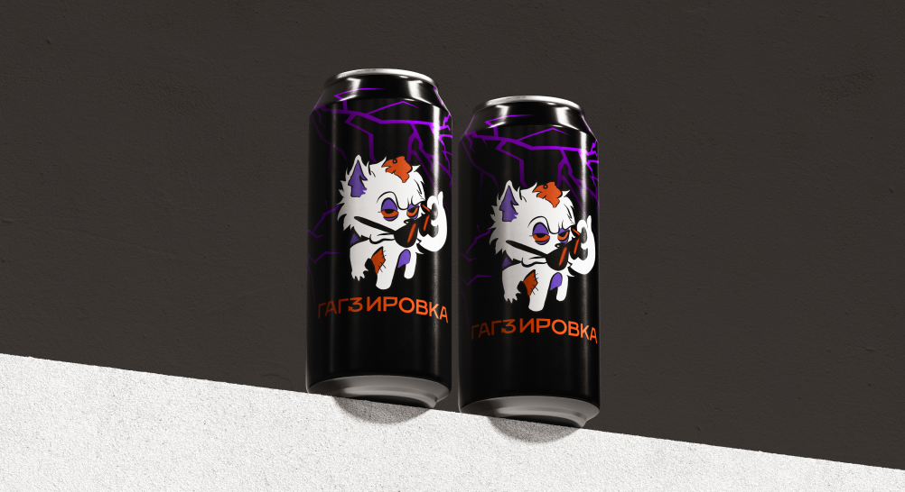
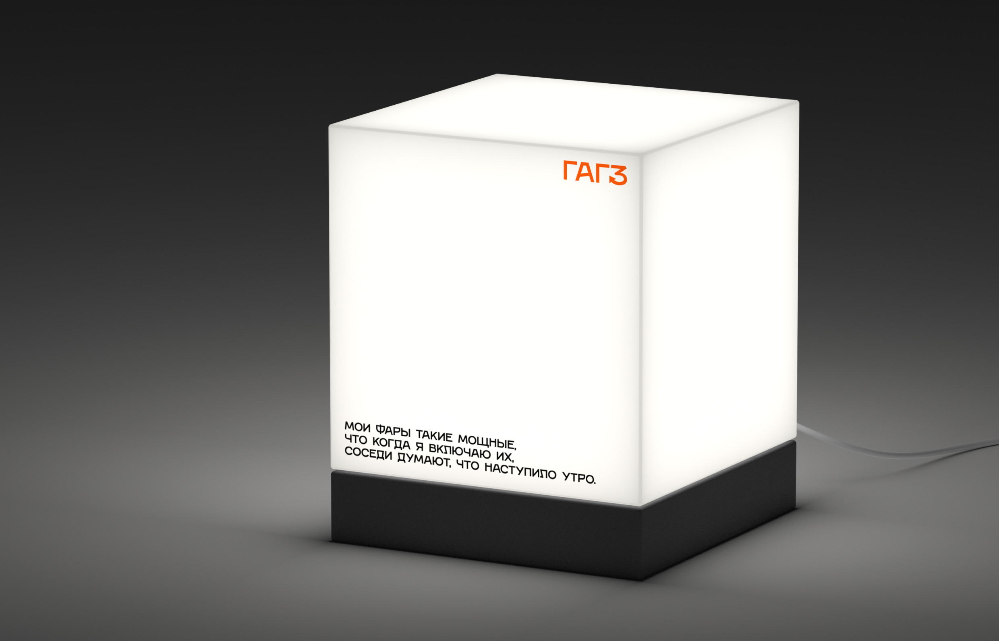
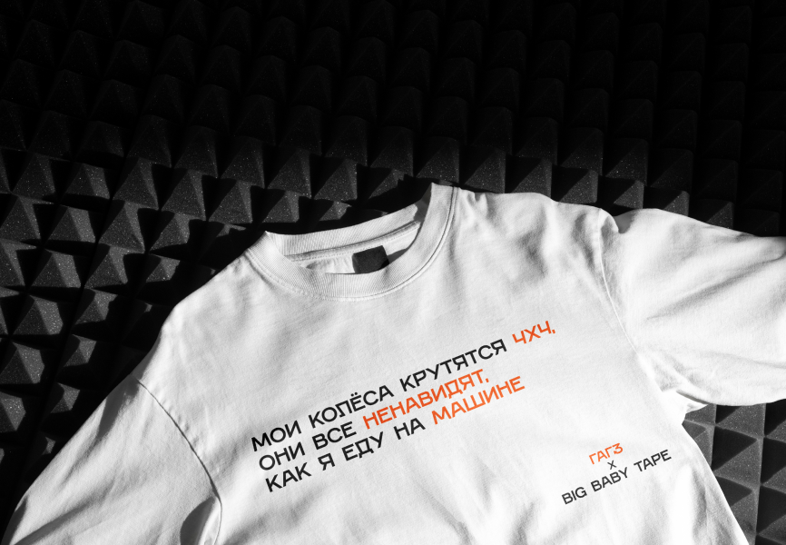
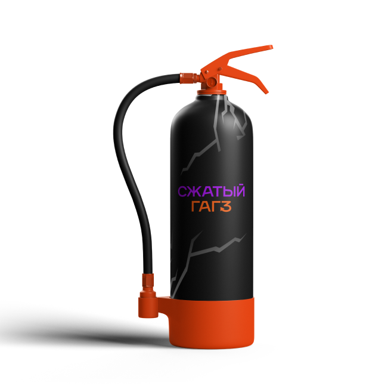
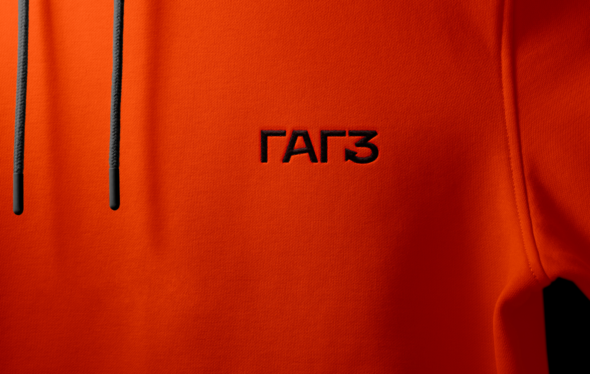
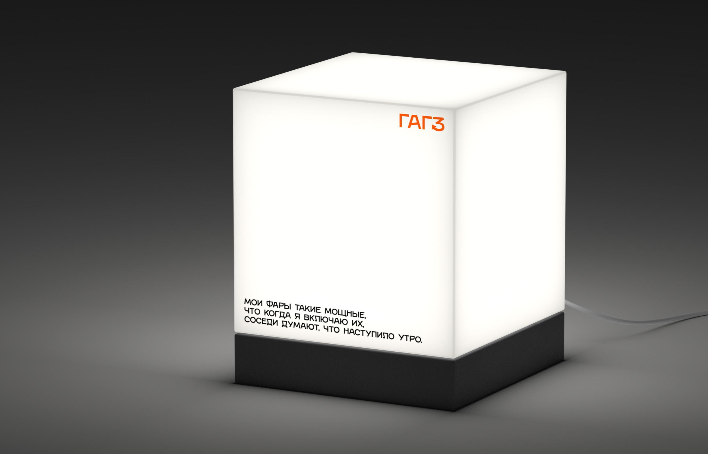
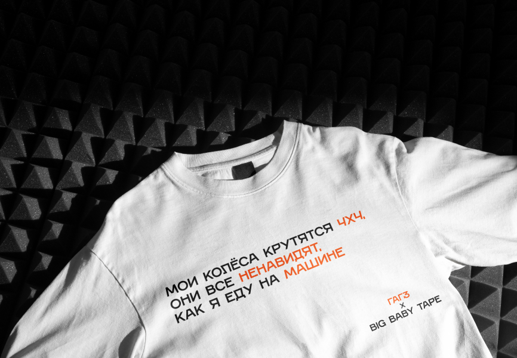
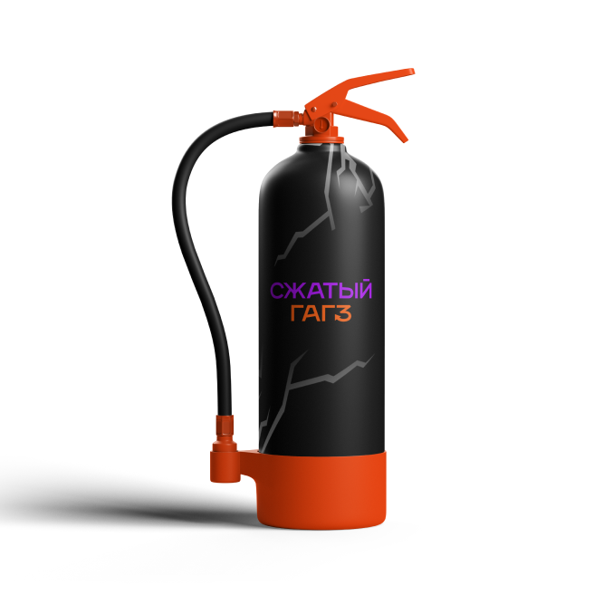
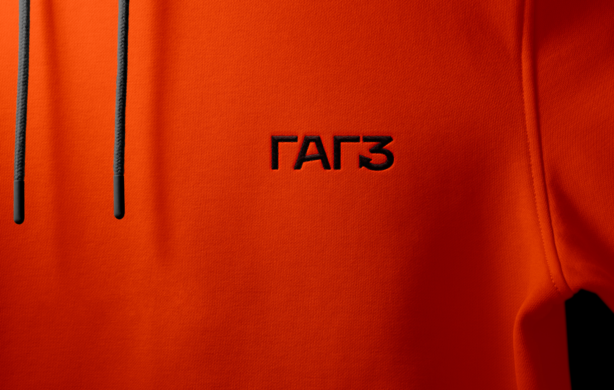

БРЕНД
САРКАСТИЧНЫЙ
ЭНЕРГИЧНЫЙ
ЗАБАВНЫЙ
...
...
ИНТЕРЕСНЫЙ
КРЕАТИВНЫЙ
ПОЗИТИВНЫЙ
МИССИЯ
наша задача — повышение уровня
знания ПДД в обществе. Также обучаем
и информируем с сарказмом,поднимаем
настроение, делаем рутинное —
нескучным. Этим мы экономим время
усвоения, снижаем риски появления
неприятностей на дорогах.
ЦЕННОСТИ
побуждаем к развитию через призму
иронии/самоиронии. Ценим желание
знать больше, любопытство и тягу
к саморазвитию, юмор.
АЙДЕНТИКА
Метафора света и комиксов
Высвечивание контента
фарами/светоотражателями
как высвечивание проблем
и символ путеводного,
направляющего света.
ЛОГО
Характер
острые углы. отсылающие
к дерзости. Версия
с обрамленным бабблом
названием — метафора
собранной в одном месте
учебной информации.
ПАЛИТРА
яркие, почти кричащие
оттенки, привлекающие
внимание и передающие
весь сюрр-хаотичный
образ сервиса.
ТИПОГРАФИКА
tone of VOICE
Да ладно, ну какой tone of voice!
Это типа как ты говоришь, знаешь,
с каким настроением и отношением.
Ну, вот, если ты шутишь, то твой
tone of voice будет весёлым
и игривым, а если серьёзно разговариваешь,
то станет более строгим и деловым.
Так что наш tone of voice —
это неформальная, веселая, иногда
строгая речь, смекаешь?
МЕРЧ

    
   